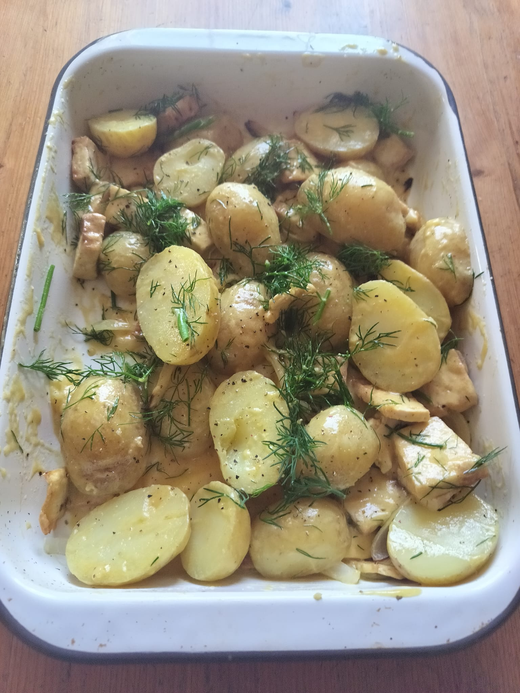

Lemon Tofu Potato Salad

A zesty light summer salad which shall not disappoint!
Created using fresh, delicious ingredients,
this salad can be the perfect accompaniment as either a saucy side dish
or as your main squeeze!
Uncontent to be just a vegan meal, it's also nutritious, gluten free and easy to prepare.
Give it a go.
Ingredients
- 500g New Potatos
- 150g of Tofu
- One Brown Onion
- ¼ Cup of Dill - Chopped
- ½ tsp of Sea Salt
Dressing
- ¼ Cup of Olive Oil - EXTRA Virgin
- 2 Tbsp Lemon Juice
- Zest of One Lemon
- One Garlice Clove - Minced
- 2 Tbsp of Dijon Mustard
- ½ tsp of Sea Salt
- Black Pepper - To Taste
Steps
- Bisect the potatoes - leave the skin on
- Submerge in water and add the salt. Boil for 15 minutes or until soft
- Meanwhile roast/ airfry the tofu and onion adding oil when neccesary.
- Add all dressing ingredients into a bowl and whisk.
- Once the potato, tofu and oniion are cooked, combine with the dressing.
- Mix in the dill.
- Tell no one.
Home